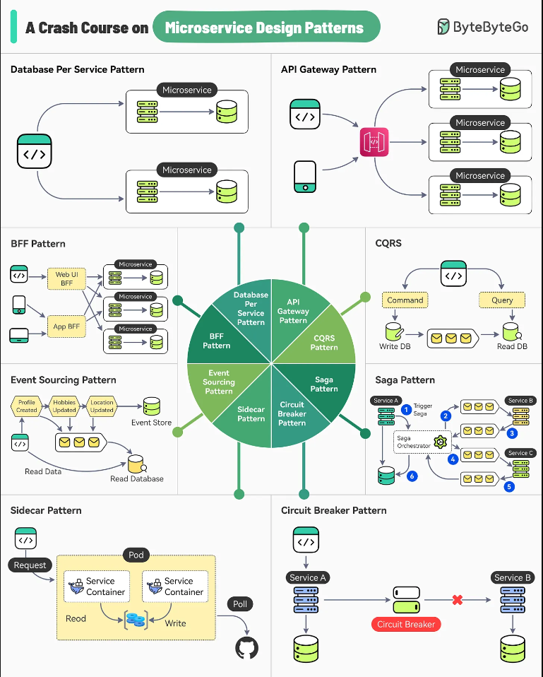

Microservices Design Patterns¶
1. Introduction¶
- This part focuses on:
- Monolithic vs Microservices.
- Important Microservices Patterns:
- Strangler Pattern: For refactoring a monolithic service into microservices.
- Saga Pattern: For solving distributed transaction issues.
- CQRS (Command Query Responsibility Segregation): For separating read and write operations.
- This topic can lead to around 15 questions in interviews.
üöÄ Level up your Google SSE interview prep with this essential guide on microservices architecture! üìå Dive in here.
2. Disadvantages of Monolithic Architecture¶
- Tight Coupling:
- Changing one line can impact other components.
- Entire application needs to be tested/deployed for one change.
- Difficult to Scale:
- If one component needs scaling, the entire application must be scaled.
- Expensive Deployments and Rollbacks:
- Redeploying the whole application for small changes.
- Large Codebase:
- Everything is in a single application.
- Codebase grows large over time, making changes and impact analysis harder.
¶
3. Why Microservices?¶
- Microservices overcome monolithic architecture disadvantages.
- The idea is to split a large application into smaller, independent services.
4. Advantages of Microservices¶
- Better Separation of Concerns: Each service handles a distinct business function.
- Loose Coupling: Services interact minimally, reducing interdependencies.
- Independent Deployment: Services can be deployed and updated separately.
- Scalability: Only the specific services needing resources can be scaled.
- Faster Release Cycles: Smaller services allow for quicker updates and releases.
5. Disadvantages of Microservices¶
- Service Boundaries/Decomposition:
- Identifying proper service boundaries is challenging.
- Inter-Service Communication:
- Managing communication between services is complex.
- Requires monitoring and handling service calls and failures.
- Distributed Transaction Management:
- Handling transactions across multiple databases is difficult.
¶
6. Microservices Design Phases¶
- Decomposition Patterns: How services are split.
- Database Patterns: How databases are handled.
- Communication Patterns: How services communicate with each other.
- Integration Patterns: How services are integrated with external systems.
- Deployment Patterns: Best practices for deploying services.
- Cross-Cutting Concerns: Includes monitoring, logging, and handling failures.
üöÄ Want to master Microservices Patterns for your Google SSE interview prep? üìå Learn more here
7. Decomposition Patterns ‚≠ê¶
- By Business Capability:
- Split services based on distinct business functions.
- Example: Order management, inventory, and payment services.
- By Subdomain - Domain Driven Design (DDD):
- Split large domains into smaller services.
- Example: Splitting the payment domain into multiple specialized services.
8. Strangler Pattern ‚≠ê‚≠ê¶
- Purpose: Gradually refactor a monolithic application into microservices.
- How it Works:
- A "controller" handles requests.
- Initially, all traffic is forwarded to the monolithic app.
- Gradually, specific functionalities are extracted into microservices, and traffic is routed to them.
- Eventually, the monolithic app is "strangled."
- Advantages:
- Minimizes disruption.
- Gradual transition to microservices.
- Example:
- Refactoring an e-commerce website by migrating functionalities like order placement, inventory management, and payment processing to microservices.
9. Data Management in Microservices¶
- Two Approaches:
- Database for Each Individual Service: Each microservice has its own dedicated database, promoting autonomy and isolation.
- Shared Database: All microservices share a single database, simplifying data access but potentially leading to complexities.
- Why Database per Service is Preferred:
- Scalability: Independent scaling of services.
- Isolation: Changes in one service's database don't affect others.
- Technology Flexibility: Services can choose different databases based on needs.
- Advantages of Shared Database:
- Join Query and Transactional Property (ACID).
- Drawbacks of Shared Database:
- Performance Bottlenecks: Increased contention as more services access the same database.
- Complexity: Managing consistency across services is difficult.
- Limited Scalability: Scaling the entire database is required.
10. Saga Pattern ‚≠ê‚≠ê‚≠ê¶
- Purpose: Manage distributed transactions (ACID) across multiple databases, ensuring data consistency even if some operations fail.
- How it Works:
- Local transactions are executed within each participating service.
- Each transaction updates the database and publishes an event.
- Subsequent transactions listen to these events and proceed.
- In case of failure, compensation events are published to undo operations.
- Types of Sagas:
- Choreography: Each service manages its transactions and listens to events from others.
- Orchestration: A centralized orchestrator manages the transaction flow and compensation logic.
- Example:
- An order processing saga involving order creation, inventory management, and payment processing.
- If payment fails, compensation events cancel the order and update inventory.
- Advantages:
- Guarantees data consistency.
- Handles failures and rollbacks effectively.
- Flexible service interactions.
- Disadvantages:
- More complex than local transactions.
- Requires careful design to ensure correctness.
- Interview Question Example:
- How would you handle a transaction involving transferring money between two users in a microservice architecture?
11. CQRS (Command Query Responsibility Segregation) Pattern ‚≠ê‚≠ê¶
- Purpose: Separate read (query) operations from write (command) operations for better performance and scalability.
- How it Works:
- The system maintains separate models for read and write operations.
- Write operations update the write model through commands.
- Read operations access the optimized read model.
- Advantages:
- Performance Improvement: Optimized read models handle queries efficiently.
- Scalability: Independent scaling of read and write models.
- Flexibility: Different data structures and query languages for read and write operations.
- Example:
- A blog app where writes are performed on a relational database, while reads access a denormalized view optimized for fast search.
- Challenges:
- Maintaining consistency between the read and write models.
- Ensuring the read model is up-to-date with write model changes.

Resources¶
- Microservices Design Patterns | Part1 | Introduction and Decomposition Pattern
- Microservices Design Patterns | Part2 | SAGA Pattern | Strangler Pattern | CQRS